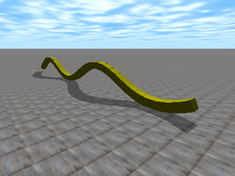
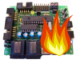

Software
De WikiRobotics
Contenido
[ocultar]2011
| C++ Easy Graph Library | Librería templatizada y fácil de usar para la generación de grafos. Incluye algoritmos de búsqueda. |
2008
| Cube Simulator |  Simulación de la locomoción de robots ápodos. |
| Skybot-test |  Aplicación gráfica para el control del robot Skybot y la visualización del estado de todos sus sensores. Aplicación gráfica para el control del robot Skybot y la visualización del estado de todos sus sensores.
|
| Pyburn |  Aplicación gráfica para la grabación a bajo nivel de la Skypic usando otra Skypic |
| Wiimote windows | Experiencias con el mando de la Wii y windows XP |
{kind=link}
{kind=link}
2007
| Pywii | Librería de comunicaciones para el wiimote (mando de la wii) (Linux, Python) |
| Pydownloader | Carga de programas en la Skypic a través del bootloader (Multiplataforma, Python) |
| LibIris | Libreria en Python para la carga de firmware en la tarjeta Skypic |
| LibStargate | Libreria en Python para la creación de clientes para los stargates (Multiplataforma, Python) |
| Stargate | Proyecto stargate: acceso al mundo exterior al PC |
| PIC_downloader | Descarga de programas en la Skypic a través del Bootloader. (Linux, lenguaje C) |
| Skypic down | Cliente para la grabación de microcontroladores PIC a bajo nivel (Linux, Lenguaje C) |
| PICP | Servidor para la grabación de microcontroladores PIC (Firmware) |
| PIC Bootloader | Bootloader para Microcontroladores PIC (Firmware) |
2005
| Star-Servos8 | Control de servos del tipo Futaba 3003 o compatibles desde el PC |
2004
| Skypic-down | Grabación de programas en la tarjeta Skypic (A bajo nivel, sin bootloader) |
| Gpbot-down | Descarga de programas en la tarjeta GP-BOT |
| Comunica | Toma de medidas y envío al PC (Tarjeta CT6811) |
| CT6811 Downloader | Herramienta sencilla de descarga de los datos para la CT6811 |
2003
| Star-generic | Cliente stargate para el control y monitorización de sistemas desde el PC |
| LibStargate | Librería para la creación de clientes para la comunicación con los stargates |
| Proyecto Stargate | Control del “mundo exterior” desde el PC |
2002
| G-SCTERM | Terminal de comunicaciones serie |
| Librería CTS | Programación y control de la tarjeta CT6811 |
| CTTOOLS | Herramientras para la tarjeta CT6811 |
| Newton | Programa de simulación de cinemática de partículas |
| Gterm | Envío y edición de mensajes SMS desde el PC |
| XBT6811 | Controlar la posición de 4 servos de una BT6811 conectada por el SPI a una CT6811 |
Plantilla
| [Nombre] | Descripción |
Noticias
- 5/Jun/2008: Finalizada la migración
- 3/Jun/2008: Comenzada la migración del índice de software al wiki